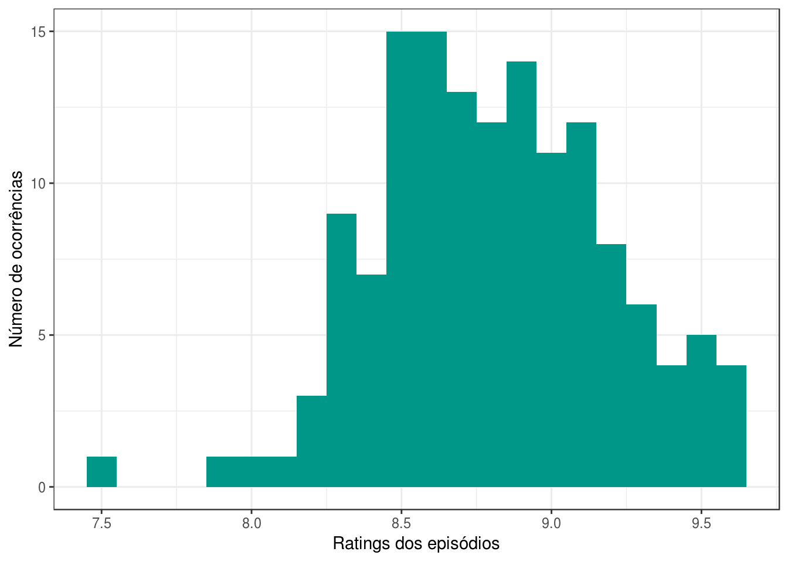
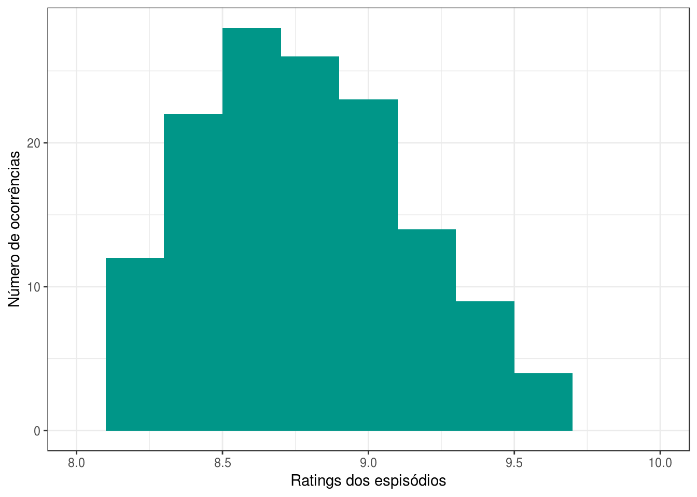
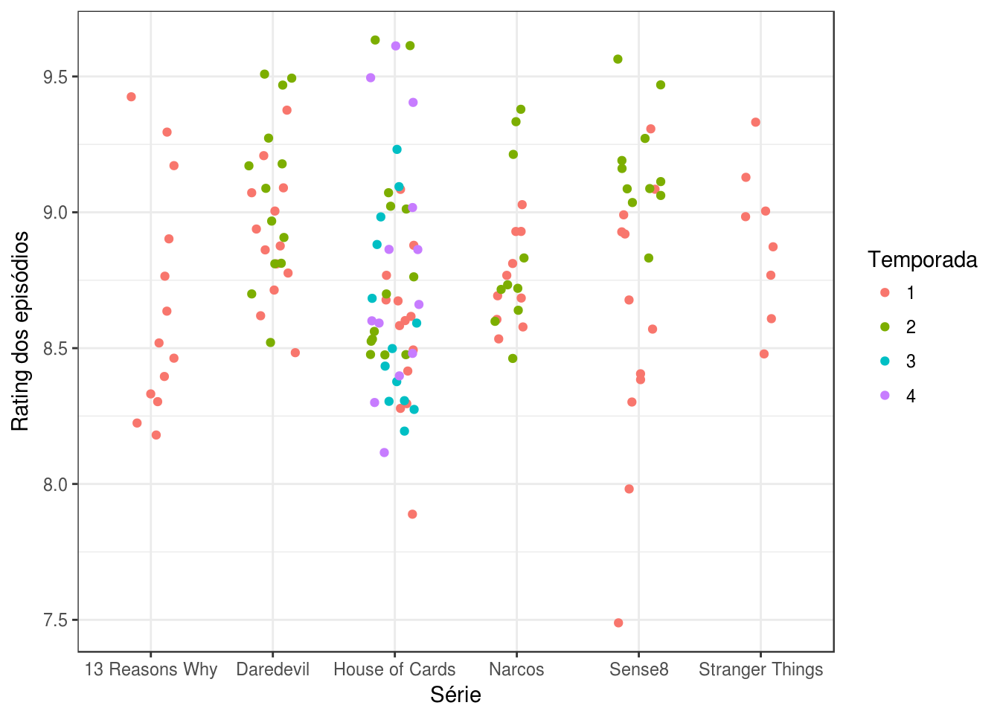
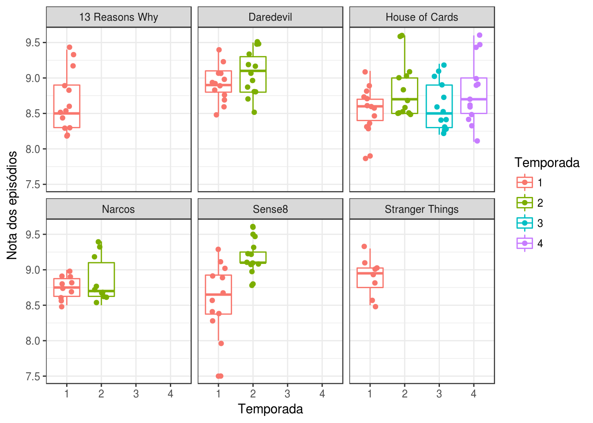
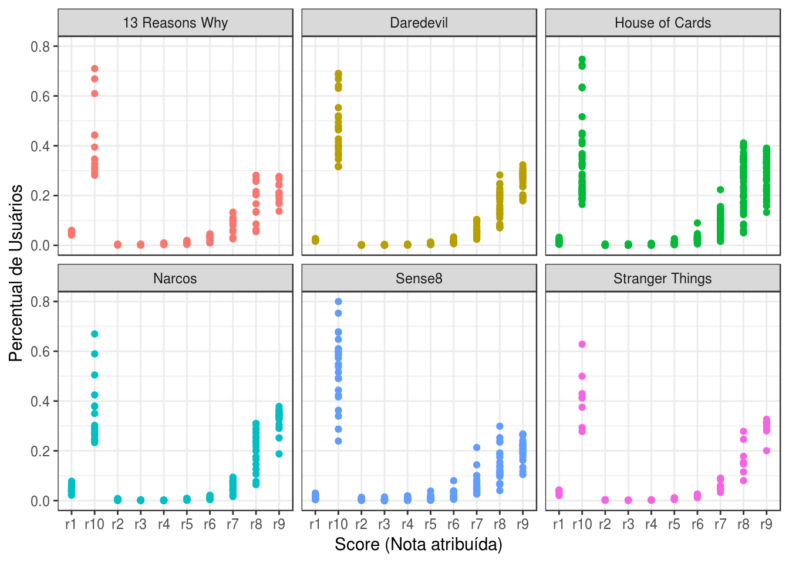
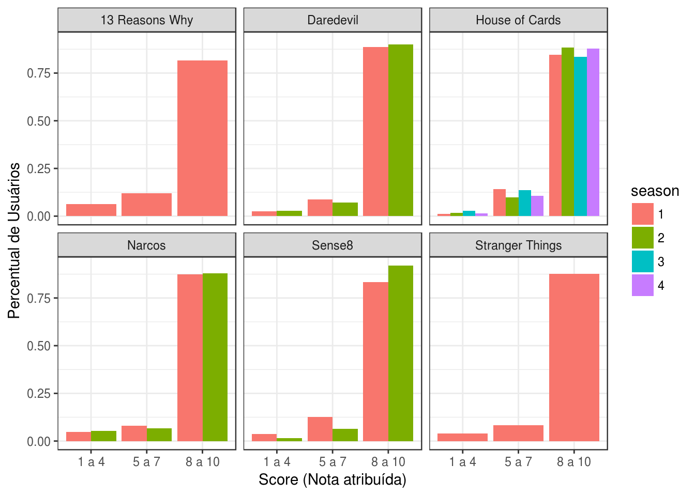
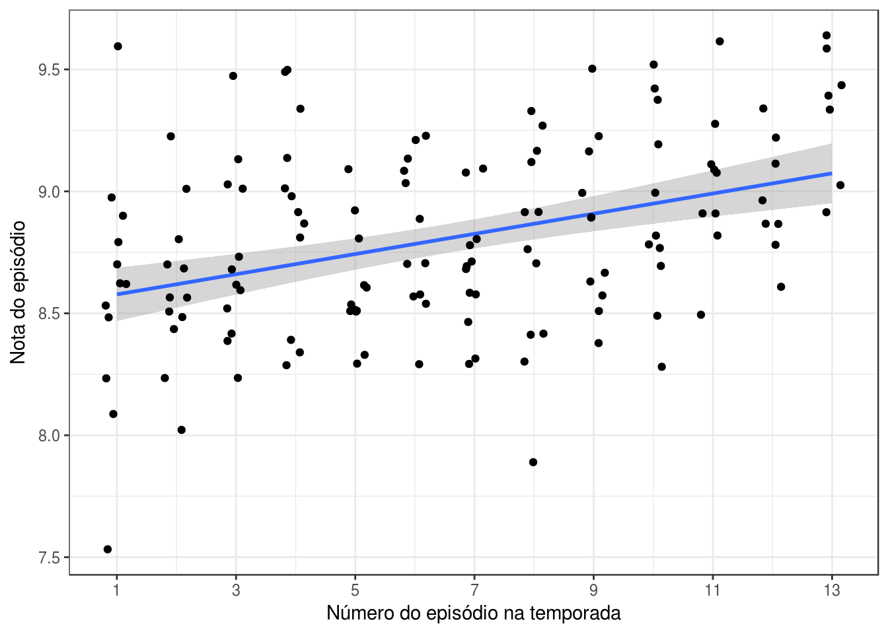
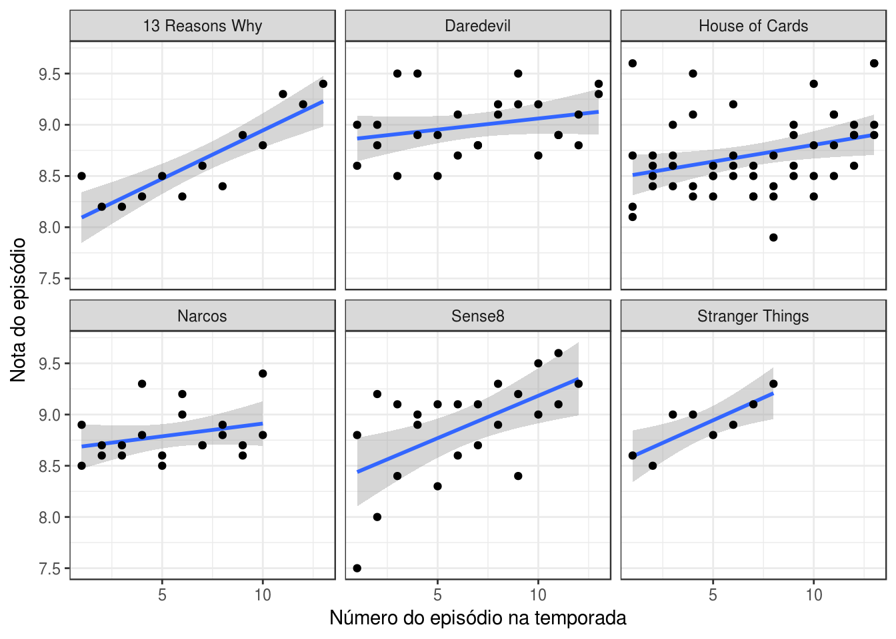
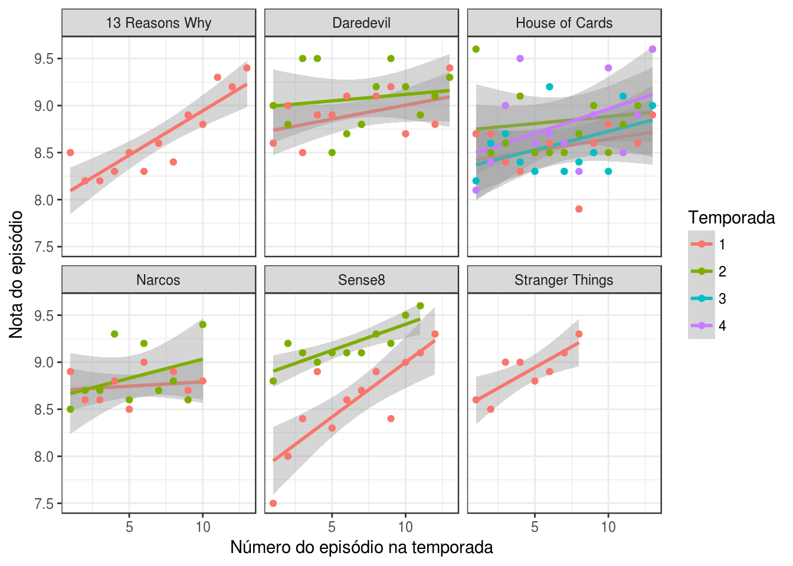
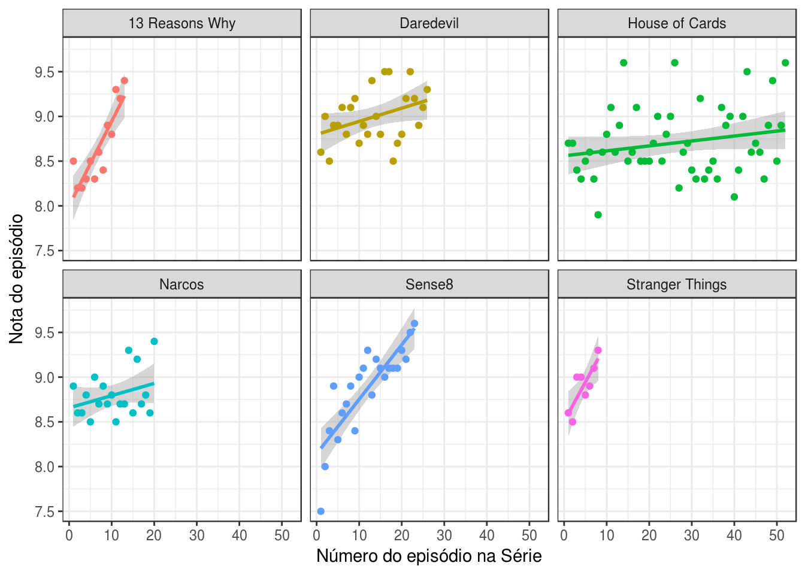

Séries Originais Netflix - Melhores temporadas e mais
Análise realizada em 13/06/2017 para a disciplina de Análise de Dados 1 (Curso de Computação - UFCG)
Conjunto de dados utilizado
Diante do conjunto de dados disponível para análise aqui optei por escolher as séries originais da Netflix. Ou seja, as séries produzidas e disponibilizadas pela Netflix para todo o mundo. A fonte dos dados é o IMDB, um banco de dados online com informação sobre música, filmes, séries, cinema, jogos, programas e comerciais de TV, atualmente percente a Amazon.
library(tidyverse)
theme_set(theme_bw())
series_imdb <- read_csv("series_from_imdb.csv")
series_netflix <- series_imdb %>% filter(series_name %in% c("13 Reasons Why", "Daredevil", "House of Cards", "Narcos", "Sense8", "Stranger Things")) %>%
mutate(series_name = factor(series_name)) %>%
mutate(season = factor(season))
Portanto as séries escolhidas para a análise são:
[1] "13 Reasons Why" "Daredevil" "House of Cards"
[4] "Narcos" "Sense8" "Stranger Things"
São 142 observações de 6 séries com 18 variáveis disponíveis. Na seção seguinte iremos descobrir sobre algumas delas.
Descrição das variáveis
A seguir estamos interessados em entender, de forma geral, quais as variáveis que iremos utilizar na análise e qual seu comportamento.
Cada observação no nosso conjunto de dados possui como variáveis:
[1] "series_name" "series_ep" "season" "url" "Episode" "UserRating" "UserVotes" "r1" "r10" "r2"
[11] "r3" "r4" "r5" "r6" "r7" "r8" "r9" "season_ep"
- series_name: o nome da série.
- series_ep: o número do episódio desde o primeiro ignorando temporadas.
- season_ep: o número do episódio dentro de uma temporada.
- url: link para a página do episódio no imdb.
- Episode: nome do episódio.
- UserRating: rating associado ao episódio pelo imdb. É explicado aqui.
- UserVotes: número de votos no imdb.
- r1, r2, …, r10: proporção de notas de usuários com score 1, 2, …, 10.
Panorama da variável UserRating (nota dos usuários)
Uma das variáveis que utilizaremos para responder as perguntas dessa análise é a UserRating, daqui por diante mencionada como nota ou rating atribuído a um episódio.
Inicialmente se olharmos a distribuição dos ratings (notas) dadas aos episódios temos:
series_netflix %>%
ggplot(aes(UserRating)) +
geom_histogram(binwidth = .1, fill = "#009688") +
scale_x_continuous(breaks = seq(7, 10, 0.5)) +
labs(y = "Número de ocorrências", x = "Ratings dos episódios")

A largura das barras foi colocada em um décimo para uma representação da distribuição mais real, uma vez que a diferença mínima entre os ratings que variam é de 1 décimo. Sobre a distribuição é possível notar que a grande maioria das notas dadas aos episódios estão acima de 8. Ao olharmos para esse histograma (distribuição de frequências) podemos observar uma leve distorção à esquerda, quando a frequência dos dados está concentrada nos altos valores. No entanto, poucos valores estão abaixo de 8. Então se observássemos apenas os valores acima de 8 teríamos.
series_netflix %>%
ggplot(aes(UserRating)) +
geom_histogram(binwidth = .2, fill = "#009688") +
scale_x_continuous(breaks = seq(7, 10, 0.5), limits = c(8, 10)) +
labs(y = "Número de ocorrências", x = "Ratings dos espisódios")

Agora, definindo o limite para as notas acima de 8 e ajustando a largura das barras para dois décimos, a distribuição parece um pouco mais unimodal, no centro está a maior quantidade de dados.
Ainda sobre ratings/notas, a visualização a seguir traz a distribuição das notas dos episódios por série e por temporada.
series_netflix %>%
ggplot(aes(series_name, UserRating, color = season)) +
geom_jitter(width = .2) +
labs(x = "Série", y = "Rating dos episódios", color = "Temporada")

Esse gráfico nos diz várias coisas. A primeira delas é que as séries possuem número de episódios distintos, House of Cards tem mais episódios que Stranger Things por exemplo. Outra observação importante é que as notas em algumas séries variam menos que em outras, ou seja, seus pontos estão mais próximos (verticalmente, eixo y das notas). As notas em Stranger Things variam menos do que em Sense8 por exemplo. Essa visualização também mostra como citado acima que a grande maioria das notas estão acima de 8.
Outros sumários gerais sobre as notas dos episódios (User Ratings) são:
## UserRating
## Min. :7.500
## 1st Qu.:8.500
## Median :8.800
## Mean :8.806
## 3rd Qu.:9.100
## Max. :9.600
A média é de 8.806338 e a mediana, medida que divide os dados de forma que 50% das observações estão abaixo e os outros 50% estão acima, é de 8.8. O que é bem próximo considerando a precisão de 1 décimo das notas.
Agora que conhecemos melhor como os ratings dos episódios se apresentam nos dados das séries originais da Netflix, vamos apresentar o panorama das outras variáveis.
series_netflix.sumarizado <- series_netflix %>%
group_by(series_name) %>%
summarise(n_eps = n(),
n_seasons = max(as.numeric(season)),
mean_rating = mean(UserRating),
median_rating = median(UserRating))
kable(x = series_netflix.sumarizado %>%
select(series_name, n_seasons, n_eps),
col.names = c('Séries', 'Número de temporadas', 'Número de Episódios'))
| Séries | Número de temporadas | Número de Episódios |
|---|---|---|
| 13 Reasons Why | 1 | 13 |
| Daredevil | 2 | 26 |
| House of Cards | 4 | 52 |
| Narcos | 2 | 20 |
| Sense8 | 2 | 23 |
| Stranger Things | 1 | 8 |
A tabela acima apresenta uma visão sumarizada das variáveis de número de episódios, número de temporadas em cada série. A série que menos possui episódios é Stranger Things, enquanto que a que mais possui episódios é House of Cards. A média do número de episódios é de r mean(series_netflix.sumarizado$n_eps) e a média do número de temporadas é de r mean(series_netflix.sumarizado$n_seasons).
Agora que conhecemos o panorama geral das variáveis que iremos trabalhar, podemos responder algumas perguntas sobre as séries selecionadas.
Qual é a temporada que é melhor avaliada dentro de uma série?
Essa pergunta foi escolhida e meu palpite inicial foi de que as primeiras temporadas das séries são as melhores avaliadas. Vamos conferir abaixo um boxplot por temporada que mostra a sumarização dos ratings dos episódios e também um gráfico de dispersão que mostra a distribuição dos ratings. Essa distribuição ignora a ordem cronológica dos episódios.
series_netflix %>%
ggplot(aes(season, UserRating, color = season)) +
geom_boxplot() +
geom_jitter(width = .2) +
facet_wrap(~series_name) +
labs(x = "Temporada", y = "Nota dos episódios", color = "Temporada")

Como algumas séries como 13 Reasons Why e Stranger Things não possuem mais de uma temporada, fica claro que a melhor temporada delas é a primeira. Para as outras séries é possível fazer uma comparação.
Se tomarmos a mediana (linha central do boxplot) como parâmetro é possível identificar visualmente que a segunda temporada de Daredevil, House of Cards, Sense8 é melhor que a primeira. A exceção é Narcos, apesar de que Narcos possuem três episódios com notas elevádissmas na segunda temporada com relação a primeira. O que faz com que a média da primeira seja superior a da segunda temporada.
Contrariando meu chute inicial ao elaborar a questão. Percebemos que para as séries com mais de uma temporada, a segunda temporada é a melhor avaliada da série. Vale a pena esperar e ver se isso se confirma para as próximas temporadas de Stranger Things e 13 Reasons Why.
Uma pergunta possível após observar a figura acima é: Como a distribuição dos ratings ocorrem entre os usuários por temporada para cada série? (Pergunta derivada)
Primeiro, precisamos conhecer a distribuição das variáveis que usaremos na resposta. De r1 até r10, temos a porcentagem de usuários que deram nota 1 até 10, respectivamente, ao episódio. O cálculo final do rating do episódio não depende somente dessas porcentagens, o IMDB não divulga como é feito esse cálculo com o intuito de evitar que os usuários burlem o sistema de avaliação.
series_netflix %>%
gather(score, score_perc, r1:r9) %>%
ggplot(aes(score, score_perc, color = series_name)) +
geom_point() +
facet_wrap(~series_name) +
labs(x = "Score (Nota atribuída)", y = "Percentual de Usuários") +
guides(color = FALSE)

As maiores porcentagens de usuários em todas as séries atribuem notas acima de 8 aos episódios, concordando assim com a distribuição do UserRating mostrada no início dessa análise.
Agora que conhecemos a distribuição das porcentagens dos usuários referentes as notas atribuídas, iremos dividir os usuários em grupos de notas com intervalos entre 1 a 4, 5 a 7, 8 a 10.
series_perc_users <- series_netflix %>%
group_by(series_name, season) %>%
summarise(de_1_a_4 = mean(r1 + r2 + r3 + r4),
de_5_a_7 = mean(r5 + r6 + r7),
de_8_a_10 = mean(r8 + r9 + r10)) %>%
gather(score, score_perc, de_1_a_4:de_8_a_10)
series_perc_users %>%
ggplot(aes(score, score_perc, fill = season)) +
geom_bar(stat = "identity", position = "dodge") +
scale_x_discrete(labels = c("1 a 4", "5 a 7", "8 a 10")) +
labs(x = "Score (Nota atribuída)", y = "Percentual de Usuários", color = "Temporada") +
facet_wrap(~series_name)

Agrupando esses intervalos por temporada (pela média das porcentagens dos episódios em toda a temporada) para cada série é possível notar que: (1) A maioria dos usuários atribui notas acima de 8 aos episódios; (2) a segunda temporada de séries como Narcos, Sense8, Daredevil e House Of Cards a maioria dos usuários atribuindo notas entre 8 e 10 é superior as demais temporadas das respectivas séries.
Um ponto de discussão que deriva da resposta a essa pergunta é de que, em geral, as pessoas que avaliam no imdb atribuem notas altas as séries, o que faz com que uma mudança de décimos entre notas de episódios tem impacto diferente dependendo de onde ocorre. Por exemplo, se um episódio A tem avaliação de 7.3 e outro B tem avaliação de 8.3, a dinferença não é tão significativa em relação a diferença entre um episódio C com rating 8.9 para um D com rating 9.3. O que quero dizer é que: é muito mais difícil subir de rating a medida que nos aproximamos dos valores mais extremos, e por isso é mais significativo a diferença entre o segundo caso (C e D) do que no primeiro (A e B), apesar da diferença absoluta apontar o contrário. Essa questão levantada pode ser objeto de estudo em outras análises sobre esse conjunto de dados posteriormente.
Quais episódios melhores avaliados? E em que parte da temporada eles se encontram? No início, no meio ou no final?
Para responder essa pergunta, inicialmente vamos considerar todos os episódios de todas as séries sem nenhum tipo de disntinção entre eles.
series_netflix %>%
ggplot(aes(season_ep, UserRating)) +
geom_smooth(method = "lm") +
geom_jitter(width = .2) +
scale_x_continuous(breaks = seq(1, 13, 2)) +
labs(x = "Número do episódio na temporada", y = "Nota do episódio")

Como observado na visualização acima, se considerarmos todos os episódios, ordenados cronologicamente pelo número correspondente dentro de uma temporada observamos que, em geral, a uma tendência linear de crescimento dos ratings dos episódios a medida em que a série vai avançando.
Pelo gráfico é possível perceber que existem alguns episódios com ratings elevados mais no começo do que no final da série, mas não estamos interessados em observações isoladas, mas sim na tendência de crescimento dos ratings ao longo da temporada, ou seja, em geral se os ratings dos episódios do final das temporadas são ou não mais elevados que os do começo.
Será que essa tendência de crescimento ocorre se visualizarmos por série também?
series_netflix %>%
ggplot(aes(season_ep, UserRating)) +
geom_smooth(method = "lm") +
geom_point() +
facet_wrap(~series_name) +
labs(x = "Número do episódio na temporada", y = "Nota do episódio")

Como observado acima a tendência de subida nos ratings dos episódios ao longo de uma temporada também é observado para cada série. Algumas séries como Daredevil, House of Cards e Narcos possuem “curvas de crescimento” mais leves (mais horizontais) do que em Sense8, 13 Reasons Why e Stranger Things.
A visualização acima ignora as temporadas entre cada série, mas será que a tendência ainda é de subida por temporada para cada série?
series_netflix %>%
ggplot(aes(season_ep, UserRating, color = season)) +
geom_smooth(method = "lm") +
geom_point() +
facet_wrap(~series_name) +
labs(x = "Número do episódio na temporada", y = "Nota do episódio", color = "Temporada")

Sim, para cada série por temporada ainda é possível identificar a tendência de subida nos ratings atribuídos aos episódios. E mais, dentro de uma mesma série como Narcos, as temporadas possuem diferentes “curvas”, por exemplo, a segunda temporada teve uma crescente nos ratings dos episódios ao longo da temporada maior que na primeira.
A resposta para a pergunta inicial é de que os episódios mais bem avaliados se encontram no final das temporadas. Além disso foi encontrada uma tendência linear de subida nos ratings dos episódios dentro de uma temporada.
Agora que a pergunta foi respondida, é possível imaginar se também é observada uma tendência de subida na série como um todo. Ou seja, Ao longo de toda a série, o rating dos episódios tende a subir? (Pergunta derivada)
series_netflix %>%
ggplot(aes(series_ep, UserRating, color = series_name)) +
geom_smooth(method = "lm") +
geom_point() +
facet_wrap(~series_name) +
labs(x = "Número do episódio na Série", y = "Nota do episódio") +
guides(color = FALSE)

Sim, ao longo das temporadas em todas as séries é possível perceber que há uma melhora na avaliação dos episódios finais (lançados por último) do que em relação aos iniciais, apesar de haver exceções nas quais episódios se destacam com relação aos da mesma temporada. Adotando o critério mostrado nas visualizações acima, é possível considerar que as Séries Originais Netflix melhoram com o tempo. Sense8 é o exemplo mais claro disso.
EXTRA: TOP 5 dos episódios mais bem avaliados
Por fim apresentamos os cinco episódios com notas mais altas dentre as séries analisadas. Quatro (1, 3, 4, 5) deles acontecem nos finais de suas respectivas temporadas, e três (1, 4, 5) deles acontecem nos últimos episódios lançados e avaliados da série.
kable(x = head(arrange(series_netflix, desc(UserRating)) %>%
select(series_name, Episode, UserRating, season), 5),
col.names = c('Série', 'Episódio', 'Nota', 'Temporada'))
| Série | Episódio | Nota | Temporada |
|---|---|---|---|
| Sense8 | You Want a War? | 9.6 | 2 |
| House of Cards | Chapter 14 | 9.6 | 2 |
| House of Cards | Chapter 26 | 9.6 | 2 |
| House of Cards | Chapter 52 | 9.6 | 4 |
| Sense8 | If All the World’s a Stage, Identity Is Nothing But a Costume | 9.5 | 2 |
Até a próxima análise !!!